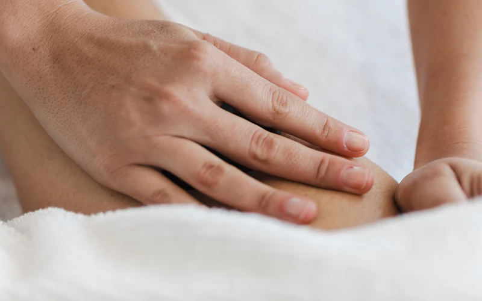
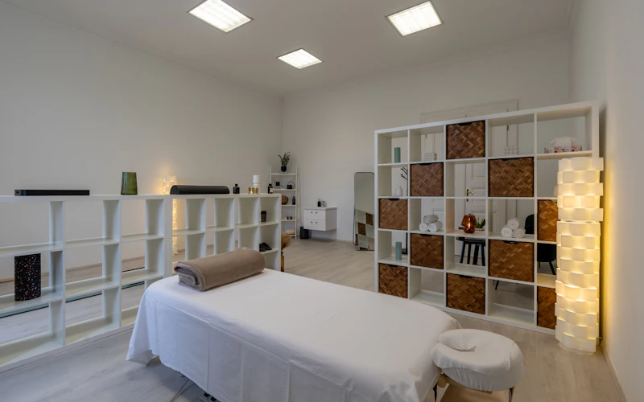

Chi desidera una valutazione osteopatica
Per chi desidera rivolgersi a un osteopata per una valutazione professionale e per comprendere se un percorso osteopatico possa essere appropriato alle proprie esigenze.
Francesco Maria Filardi · Osteopata
Un percorso professionale che unisce osteopatia, formazione in massofisioterapia e scienze motorie, con un approccio attento alle esigenze della persona.
Studio riabilitativo · Alatri (FR)
Chi sono
Sono il Dott. Francesco Maria Filardi, osteopata con studio ad Alatri.
Il mio percorso professionale nasce dall'interesse per il corpo umano, il movimento e le discipline dedicate alla persona.
Nel 1994 ho conseguito il diploma ISEF e nel 2005 ho completato la mia formazione universitaria in Scienze e Tecnica dello Sport. Nel 2007 ho inoltre conseguito un titolo triennale in massofisioterapia.
Nel corso degli anni ho approfondito il mio percorso nell'ambito dell'osteopatia, che rappresenta oggi la mia principale attività professionale.
Da circa trent'anni lavoro nella stessa struttura ad Alatri, un luogo che nel tempo si è trasformato: inizialmente dedicato anche alla palestra e alla fisioterapia, dal 2017 è uno studio riabilitativo.
Oggi condivido questo spazio con altre due professioniste, una massofisioterapista e una terapista della neuro e psicomotricità dell'età evolutiva.
La mia storia professionale unisce esperienza, formazione e un interesse costante per il corpo e il movimento.
A chi mi rivolgo
Un approccio professionale che parte dall'ascolto e dalla valutazione delle esigenze individuali.
Per chi desidera rivolgersi a un osteopata per una valutazione professionale e per comprendere se un percorso osteopatico possa essere appropriato alle proprie esigenze.
Per chi considera importante un'assistenza che tenga conto della propria storia, delle necessità personali e delle indicazioni professionali.
Per chi desidera approfondire il rapporto tra corpo, movimento e benessere attraverso una consulenza professionale coerente con le competenze del professionista.
Il mio approccio
Il mio percorso formativo nasce dall'incontro tra discipline legate al corpo e al movimento. Questa esperienza rappresenta il contesto professionale attraverso cui affronto il lavoro osteopatico, con attenzione alle esigenze individuali.
Comprendere le esigenze e la storia della persona.
Considerare le caratteristiche e le necessità del singolo caso, nell'ambito delle competenze professionali.
Valorizzare le conoscenze maturate nel campo delle scienze motorie.
Utilizzare le competenze osteopatiche secondo appropriatezza e indicazioni professionali.
Un percorso professionale sviluppato attraverso anni di studio e attività, al servizio della persona.
I servizi
L'osteopatia rappresenta la mia principale attività professionale, all'interno di un percorso formativo più ampio dedicato al corpo e al movimento.
Un primo incontro dedicato alla raccolta delle informazioni e alla comprensione delle esigenze della persona, per valutare l'appropriatezza dell'intervento osteopatico.

Attività osteopatica svolta attraverso valutazione e tecniche manuali, nell'ambito delle competenze professionali e delle indicazioni appropriate al caso.

Possibilità di richiedere informazioni sulle competenze professionali di Francesco, sulla formazione in massofisioterapia e scienze motorie e sulle modalità di accesso alle prestazioni effettivamente disponibili.
Come funziona
Scrivimi attraverso il modulo di contatto per richiedere informazioni o concordare un appuntamento.
Durante la consulenza iniziale raccolgo le informazioni necessarie sulla tua storia e sulle tue esigenze.
Valuto le tue esigenze nell'ambito delle competenze professionali e delle indicazioni appropriate.
Quando appropriato, ti propongo un percorso coerente con la valutazione professionale.
Dove ricevo
FAQ
L'osteopatia è una professione sanitaria: nel mio lavoro mi occupo di valutazioni e interventi manuali, nell'ambito delle competenze professionali e delle indicazioni appropriate.
Durante la prima consulenza raccolgo le informazioni rilevanti e valuto le tue esigenze individuali, per comprendere se un percorso osteopatico sia appropriato.
La mia formazione comprende il diploma ISEF, gli studi universitari in Scienze e Tecnica dello Sport, la massofisioterapia e l'osteopatia.
Sì. Condivido gli spazi con una massofisioterapista e una terapista della neuro e psicomotricità dell'età evolutiva.
Puoi scrivermi tramite il modulo di contatto oppure all'indirizzo ffilardi@libero.it per richiedere informazioni e concordare insieme le modalità di appuntamento.
Contatti
Desideri ricevere informazioni sull'attività osteopatica o richiedere una consulenza? Scrivimi per conoscere le modalità di appuntamento.